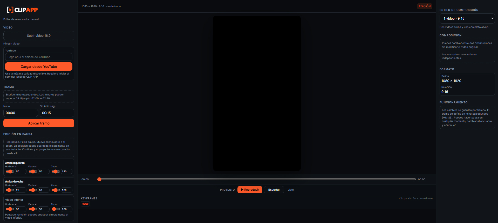

Editor de reencuadre manual
Tus mejores jugadas,
en un solo clic.
La herramienta más ágil para cortar, extraer y reencuadrar los momentos clave de tus videos y streams. Calidad profesional, sin complicaciones.
